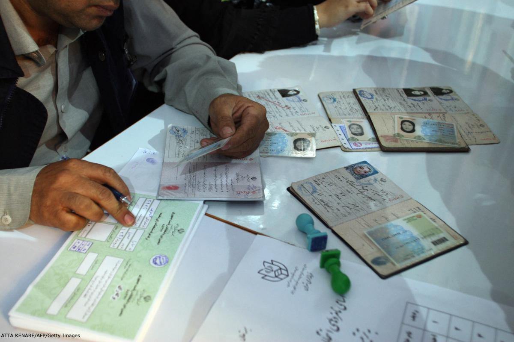

محمدرضا سرداری، نویسنده و کارشناس پیشین وزارت کشور
پیش زمینه
نقش جامعه مدنی در برگزاری انتخابات، یکی از ابهامات مسئله انتخابات در ایران است. بدین معنی که روشن نیست جایگاه دولت و جامعه مدنی در مراحل اجرایی چیست؟ آیا قانونگذاران، برگزاری انتخابات را برعهده دولت نهادهاند یا این جامعه مدنی است که باید آن را اجرا و نظارت کند. از این رو پرسشی مطرح میشود که تا کنون چه تلاشهایی برای برپایی کمیسیون مستقل انتخابات در ایران صورت گرفته است و دیگر آنکه آیا انتخابات در ایران میتواند زیر نظر یک کمیسیون مستقل از دولت برگزار شود یا قوانین موجود چنین اجازهای را نمی دهد.

امروزه در بیشتر کشورهای دموکراتیک و همچنین کشورهایی که مراحل گذار به دموکراسی را پیمودهاند انتخابات به نهادهای مستقل و بیطرف سپرده شده است و البته در هر کشوری شیوه تشکیل این کمیسیون ها بنابر تجارب و شرایط سیاسی و اجتماعی حاکم متفاوت است. یک بررسی نشان میدهد که در دست کم 60 کشور جهان از کمیسیون ملی انتخابات بهره میبرند.( سایت تابناک، 12 مهر 1388، کد خبر: ۶۷۰۹۸ )
در ایران نیز شیوه برگزاری انتخابات همواره یک مسئله جدی بوده و زمینه تحولات بزرگ سیاسی و اجتماعی را فراهم کرده است. پس از انقلاب تا کنون تلاشهای مختلفی برای اصلاح قوانین انتخاباتی هم برای محدود کردن دایره انتخاب مردم و هم برای آزادی و سلامت انتخابات صورت گرفته است. این تلاشها در دوره معاصر، پس از پدیدار شدن جنبش اصلاحی دوم خرداد، از سوی دولت محمد خاتمی و بخشی از جامعه مدنی صورت گرفت که میتوان آن را مقدمه و سرآغازی برای ایجاد یک کمیسیون مستقل برای انتخابات توصیف کرد.
در واقع از آن زمان تاکنون 4 رویداد مهم مسئله انتخابات را تحت تاثیر خود قرار داده است. نخست لایحه اصلاح قانون انتخابات مجلس بود که از در سال 81 از سوی دولت هشتم به مجلس رفت و به تصویب رسید اما با مخالفت شورای نگهبان مسکوت ماند و نهایتا از سوی همین دولت پس گرفته شد.
در این لایحه شرط نظارت استصوابی که به شورای نگهبان اختیار می داد صلاحیت نامزدها را پس از تایید از سوی هیات های اجرایی رد کند، حذف شد و همچنین شرط اعتقاد به اسلام و اصل ولایت فقیه نیز به مسلمان بودن تغییر یافت. این مصوبه گرچه نقش نظارتی شورای نگهبان را محدودتر می کرد و دایره انتخاب مردم را افزایش می داد اما ابتکاری برای تاسیس نهادی بی طرف برای برگزاری انتخابات نداشت. در مجموع این لایحه هیچگاه شکل قانون به خود نگرفت.
رویداد دوم تاسیس کمیته دفاع از انتخابات آزاد، سالم و عادلانه» از سوی برخی از فعالان سیاسی و مدنی است. این کمیته با تشكیل دو گروه کاری یعنی «بررسی قوانین و مقررات انتخابات» و «نحوه اجرای عملكرد مسئولان اجرایی و نظارتی انتخابات» کوشید بر روند برگزاری انتخابات در جمهوری اسلامی، از بستر سیاسی ـ اجتماعی آن تا هنگام انجام و اعلام نتایج و اعتراض به خروجی انتخابات، نظارت و در مورد آنها اطلاعرسانی کند. ( مرتضی کاظمیان، یک تجربه مدنی: کمیته دفاع از انتخابات آزاد، سالم و عادلانه -20/3/92 انتشارات عرصه سوم، پرونده انتخابات)
این كمیته وظیفه دیدهبانی و نظارت بر انتخابات را از انتخابات هشتمین دوره مجلس شورای اسلامی شروع کرد و در اطلاعیهای، معیارهای بیستگانهای تحت عنوان «پیش شرط برگزاری انتخابات» که از اصول اعلامیه جهانی حقوق بشر و دو میثاق مربوط به آن و بیانیه اتحادیه بینالمجالس مصوب ۲۶ مارس ۱۹۹۴ اقتباس شده بود، مورد تاکید قرار داد که به عنوان مبنای کار کمیته دفاع از انتخابات آزاد، سالم و عادلانه، اعلام شد.
در آستانهی برگزاری انتخابات مجلس هشتم در 24 اسفند 1386، کمیته با انتشار بیانیهای اعلام کرد:" انتخابات مجلس در حالی برگزار خواهد شد که فاصله محسوس نحوه برگزاری این انتخابات با استانداردها و ضوابط یک انتخابات آزاد، سالم و عادلانه، غیرقابل کتمان است. پس از ردصلاحیتهای گسترده نامزدها در هیاتهای اجرایی و ادامه این روند در هیاتهای نظارت، سرانجام شورای نگهبان با تعیین تکلیف و اعلام فهرست نهایی نامزدهای مجاز به حضور در رقابت انتخاباتی، بر برگزاری یک انتخابات ناسالم و غیرعادلانه، مهر اجرا زد."
این کمیته در واقع نخستین نهاد مدنی مستقل از دولت بود و نظام بود که برای نخستین بار انتخابات در ایران را دیده بانی میکرد اما بسیاری از اعضای آن پس از برخوردهای حکومتی بازداشت و محکوم به حبسهای دراز مدت شدند و یا به خارج از کشور مهاجرت کردند.
رویداد سوم انتخابات ریاست جمهوری سال 88 بود. در این انتخابات ابتکار تازه ای از سوی احزاب و فعالان انتخاباتی برای نظارت بر انتخابات صورت گرفت که در نوع خویش بی سابقه بود. پس از اطلاع بسیاری از فعالان سیاسی و مدنی از برنامه ریزی احتمالی برای صورت گرفتن انتخاباتی مهندسی شده از سوی دولت، در واکنش به نگرانی ها، ستاد مشترکی با نام ستاد صیانت از آراء در ستاد انتخاباتی میرحسین موسوی و مهدی کروبی شکل گرفت.
البته پیش از این نیز تجربه محدودی از سوی برخی از سازمانها و گروههای سیاسی در این زمینه صورت گرفته بود. در انتخابات دوره پنجم مجلس چند گروه سیاسی با تشکیل ائتلافی به نام "گروههای خط امام" در شهر تهران نمایندگانی را به سر صندوقها ارسال کردند تا ضمن نظارت بر روند رایگیری، آرای نامزدهای ائتلاف را شمارش و برای ستاد کاندیدا ارسال نماید. در آن دوره گرچه امکاناتی چون کامپیوتر، اینترنت و موبایل در سطح فراگیر و عمومی وجود نداشت اما با این حال این امکان را فراهم میساخت تا نامزدها بتوانند آرای خویش را از مجرایی مستقل از برگزارکنندگان انتخابات تجمیع کنند. هر چند معمولا تعداد افراد ناظر یا به کفایت نبود یا برخی نمایندگان تا پایان رای گیری و شمارش آراء به دلایل شخصی یا ممانعت مقامات رسمی پای صندوق از ادامه حضوردر حوزه های انتخاباتی باز می ماندند.
ستاد صیانت از آراء در واقع می توانست برای نخستین بار یک نهاد مستقل از دولت برای نظارت بر روند انتخابات باشد. طبق قانون انتخابات ریاست جمهوری، هر نامزد می تواند یک نماینده بر سر صندوق های رای و همچنین یک نماینده در ستاد انتخابات کشور داشته باشد. از این رو ستاد با سازماندهی چندین هزار نفر از هواداران نامزدهای خود و ایجاد یک شبکه ارتباطی سراسری از طریق سیستم پیامک و استقرار رایانه برای شمارش آراء در ستادهای انتخاباتی تلاش کرد تا از این طریق به آرای نامزدها مستقیما دسترسی پیدا کرده و شمارش کند. نکته قابل توجه در این ستاد مدیریت آن بود که در اختیار برخی از کارکنان، مدیران و وزرای پیشین وزارت کشور در دولت گذشته قرار داشت. افرادی که داوطلبانه کار می کردند و به فن انتخابات نیز آشنا بودند.
تشکیل این ستاد با مخالفت دولت و شورای نگهبان روبرو شد. مخالفان استدلال می کردند که این ستاد مبنای قانونی ندارد اما موافقان می گفتند کاری فراتر از آن چه در قانون انتخابات آمده است انجام نداده اند.
مرتضی الویری یکی از مسئولان کمیته صیانت آراء در این زمینه گفته بود وقتی کاندیدایی میتواند برای هر صندوقی یک ناظر داشته باشد، این کمیته در سطح کشور برای چهل و شش هزار صندوق سازماندهی کرده و چهل و شش هزار نفر را آموزش میدهد، سر صندوقها میگذارد که وظیفهی خود را دقیقاً در چهارچوب قانون انجام دهند. ضمناً، یک سیستم منظم رایانهای را تعبیه کرده که بتواند اطلاعاتی را که از ناظرین سر صندوقها به دست میآورد، پالایش و بررسی کند، تخلفاتی را که گزارش میدهند، دستهبندی کند و در صورت لزوم، شکایت کند. همچنین برمبنای گزارشهایی که بهدست میآورد، بتواند نتایج انتخابات را داشته باشد و بعد با آنچه وزارت کشور و شورای نگهبان اعلام میکنند، تطبیق دهد.( سایت عصر ایران، 13/2/88، کد خبر: ۷۱۲۷۵ )
این ستاد البته فرجامی نیافت و بعد از حوادث انتخابات 88 توقیف و متلاشی شد اما زمینه اعتراضات فراگیری را فراهم کرد که نتیجه آن ایجاد یک جنبش بزرگ اجتماعی بود.
تلاش دیگر برای ایجاد یک کمیسیون مستقل انتخاباتی به دوره بعد از انتخابات 88 باز می گردد. پس از اعتراض به نتیجه انتخابات و بحث گسترده در درون نظام جمهوری اسلامی، طرحی از طرف رهبر جمهوری اسلامی به مجمع تشخیص مصلحت رفت تا بر اساس آن سیاست های کلی نظام جمهوری اسلامی در زمینه انتخابات تعیین شود. پس از آن محسن رضایی دبیر این مجمع از بررسی طرحی برای ایجاد یک کمیسیون ملی برای انتخابات در مجمع تشخیص مصلحت نظام خبر داد. وی گفت:" باید کمیسیون ملی انتخابات تشکیل شود تا دولت از مداخله در امور انتخابات منع شود و در حقیقت با این کار اعتماد مردم بیشتر جلب خواهد شد؛ لذا ما در این طرح بهدنبال اصلاح نظام و قانون انتخابات هستیم."( سایت تابناک 4/7/88 ، کد خبر: ۶۵۸۰۲ )
این کمیسیون گرچه ملی لقب گرفته بود اما درعمل هدفش داخل کردن برخی از دستگاه های دولتی و نهادهای عمومی در پروسه انتخابات و محدود کردن نقش دولت در اجرای انتخابات بود.
علی عسگری نماینده پارلمانی مرکز تحقیقات استراتژیک مجمع تشخیص مصلحت در توضیحی در این باره گفته بود:" در طرح پیشنهادی کمیسیون ملی انتخابات وزیر کشور و وزیر اطلاعات از طرف دولت، رئیس دیوان محاسبات کشور و یک نفر دیگر به انتخاب مجلس که در برخی از پیشنهادات رئیس کمیسیون اصل نود پیشنهاد شده است. همچنین دادستان کل کشور و رئیس سازمان بازرسی کل کشور از طرف قوه قضاییه در این کمیسیون حضور دارند . یک نفر از اعضای حقیقی مجمع تشخیص مصلحت نظام، رئیس شورای عالی استانها و رئیس سازمان صداوسیما و یک نفر نیز از اعضای شورای نگهبان دراین کمیسیون حضور خواهند داشت ، اما عضو پیشنهادی شورای نگهبان از آنجا که این شورا به عنوان یک نهاد تصویب شده در قانون اساسی عمل میکند در کمیسیون ملی انتخابات حق رای نخواهد داشت." ( روزنامه دنیای اقتصاد،4 /12/88 ) با این وجود این طرح نیز تا کنون سرانجامی نیافته و سخنی از آن در میان نیست.
در نتیجه این بررسی میتوان گفت برگزاری انتخابات سالم و آزاد سالیان درازی است که از مطالبات فعالان مدنی در ایران است و سابقه آن به دوره پیش از پیروزی انقلاب 57 در ایران باز می گردد. دست کم پس از دوم خرداد 76 چنین خواستهای از سوی دولت، نهادها و شخصیت های مدنی و همچنین نامزدهای انتخاباتی مطرح شده است. از این رو چنین مطالباتی در کنار رویدادهای مورد اشاره نشان میدهد ضرورت واگذاری مراحل اجرایی انتخابات به یک کمیسیون ملی و مستقل به مفهومی که در کشورهای دموکراتیک و حتی برخی از کشورهای همسایه ایران وجود دارد، بیش از گذشته احساس میشود. اما آیا امکان تاسیس چنین کمیسیونی در چارچوب حقوق اساسی و اداری ایران وجود دارد؟ به این پرسش در بخش دوم این مقاله خواهیم پرداخت.